Basic Navigation
Artificial Intelligence Applied to Games
Overview
The Unreal Engine Navigation System provides pathfinding capabilities to Artificial Intelligence Agents. To make it possible to find a path between a start location and a destination, a Navigation Mesh is generated from the world’s collision geometry. This simplified polygon mesh represents the navigable space in the Level. Default settings subdivide the Navigation Mesh into tiles to allow rebuilding localized parts of the Navigation Mesh. The resulting mesh is made of polygons and a cost is associated with each polygon. While searching for a path, the pathfinding algorithm will attempt to find an optimal path with the lowest cost to the destination. The system includes a variety of features that you can use to customize the Agent’s navigation behavior based on your specific needs.
Goals
In this Quick Start guide, you will learn how to create a simple Agent that will use the Navigation System to roam around the Level.
Objectives
- Use a Navigation Mesh Actor in your Level to build the navigation.
- Learn to visualize the navigation mesh in your Level and adjust it to cover your needs.
- Modify the ThirdPersonCharacter Blueprint to roam around the Level using the Navigation System.
Required Setup
In the New Project Categories section of the Unreal Project Browser, select Games and the Third Person template.
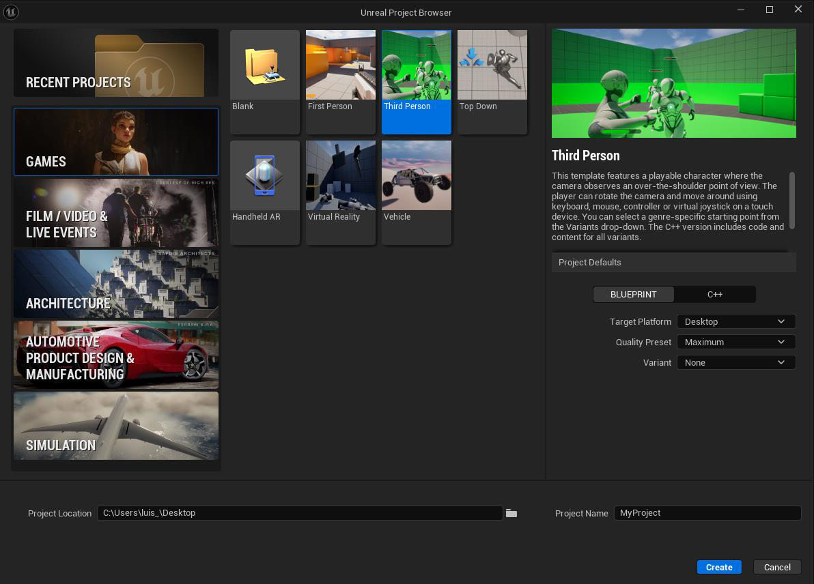
Under Project Details chose Blueprint and for the Variant option, select None, name your project “NavSystem” and click Create:
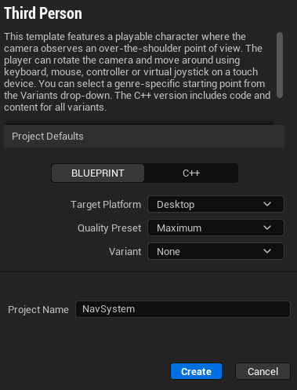
You have created a new Third Person project and are now ready to learn about the Navigation System.
Creating your First Agent
In this section, you will create a simple Agent that will roam around your Level by selecting a random location nearby and navigating to it. The Agent will wait a few seconds when it arrives at its destination before repeating the process.
In the Content Drawer, right-click and select New Folder to create a new folder. Name the folder “NavigationSystemWorksheet”.
In the Content Drawer, go to ThirdPerson > Blueprints and select the BP_ThirdPersonCharacter Blueprint. Drag it to the NavigationSystem folder and select the option Copy Here.
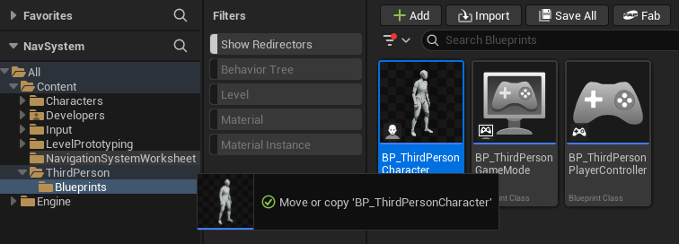
Go to the NavigationSystemWorksheet folder and rename the character blueprint you just copied to “BP_NPC_NavMesh”.
Double-click the Blueprint to open it and go to the Event Graph. Select all nodes and delete them.
Now open the Viewport and delete both the CameraBoom and FollowCamera components.
Back in the Event Graph, right-click then search for and select Add Custom Event. Name the resulting event “MoveNPC”.
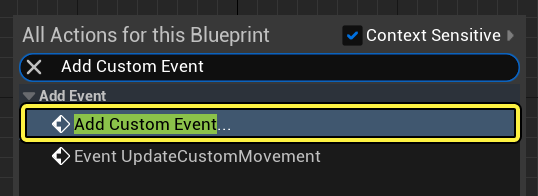
Right-click the Event Graph, then search for and select Get Actor Location.
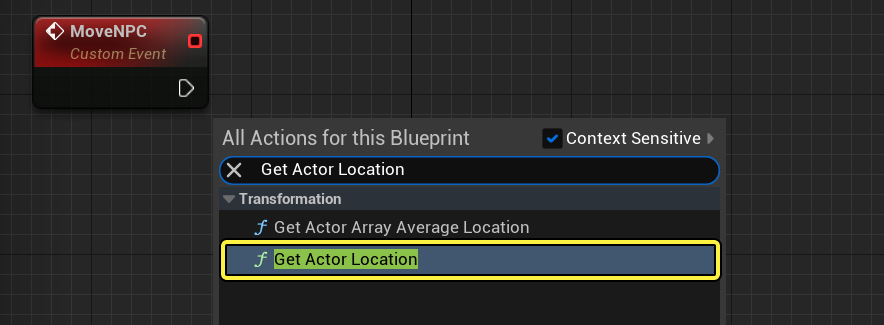
Drag from the GetActorLocation node and search for and select Get Random Reachable Point In Radius. Set the Radius to 5000 units, which corresponds to 50 meters.
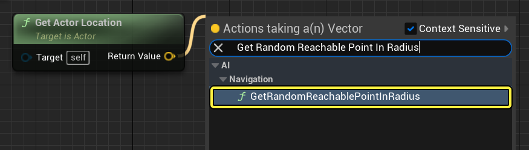
Drag from the Random Location pin of the GetRandomReachablePointInRadius node and select Promote to variable.
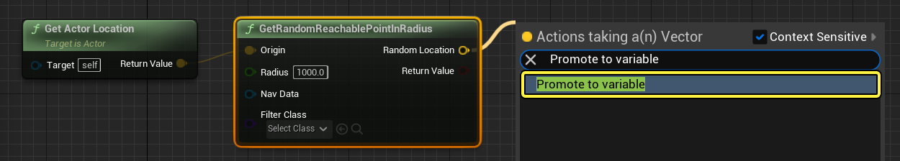
Connect the MoveNPC node to the RandomLocation node you just created.
Right-click the Event Graph, then search for and select AI Move To. Connect the RandomLocation node to the AI Move To node.
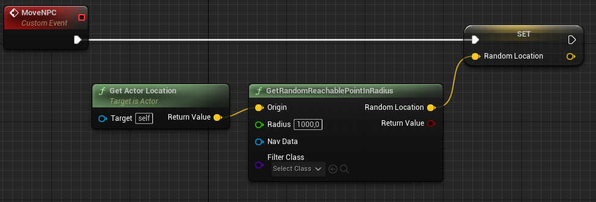
Right-click the Event Graph and search for and select Get a reference to self.
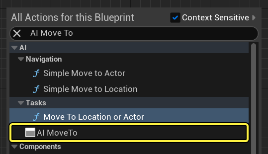
Connect the Self node to the Pawn pin of the AI Move To node. Connect the yellow pin of the Random Location node to the Destination pin of the AI Move To node, as seen below:
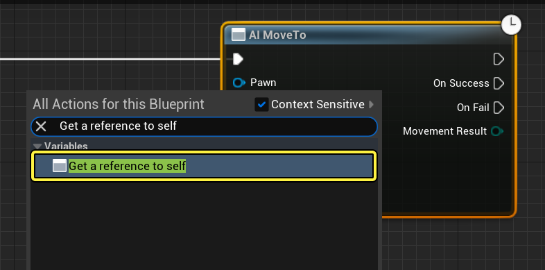
Drag from the On Success pin of the AI Move To node, then search for and select Delay. Set the Duration of the node to 4. Drag from the Completed pin of the Delay node, then search for and select MoveNPC, as seen below:
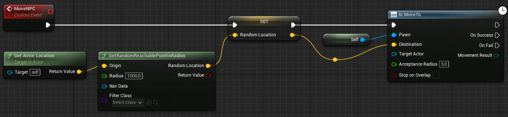
Repeat the steps above to add the nodes to the On Fail pin of the AI Move To node. Set the Duration of the Delay node to 0.1.
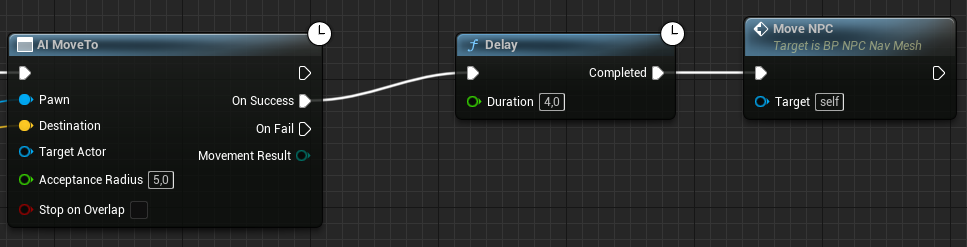
Right-click the Event Graph, then search for and select Event Begin Play. Drag from the Event Begin Play node, then search for and select MoveNPC.
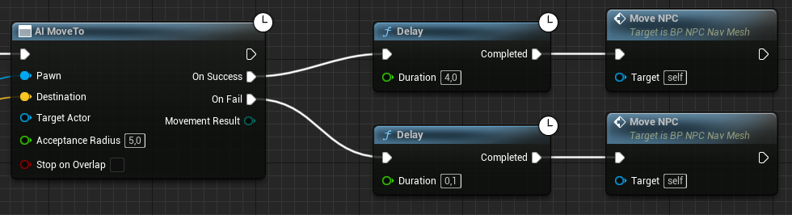
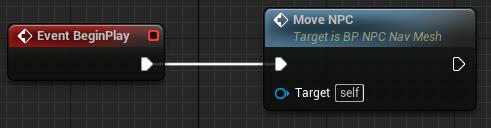
Compile and Save the Blueprint. Drag your BP_NPC_NavMesh Blueprint to your Level and click Simulate. You should see your Agent roam around the Level.
Creating the AI Controller
Until now all the logic you’ve added to your agent was done inside the character blueprint. However, that is not entirely correct.
As humans our brain is embedded in our body, but it is our brain that controls our body. In Unreal Engine the agent’s brain is separated from their body, and we are left with two key actors:
- AIController — the brain
- Character — the body
To create an AIController, create a new blueprint that is inherited from the “AIController” class, and call it AICon_Patrol:
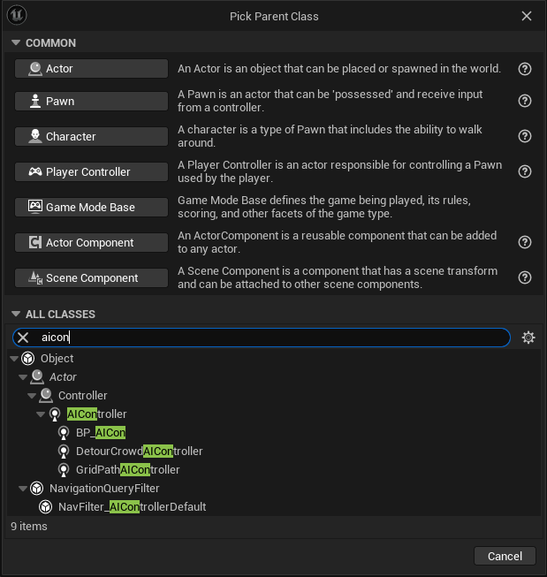
Adding Logic to the AI Controller
To be more accurate with our agent implementation, move the logic that you created in the Character blueprint (BP_NPC_NavMesh) to the AI Controller (AICon_Patrol) you created.
If done correctly, now the agent’s brain (the AIController) should tell the body what to do, when necessary.
This means that a lot of the code for our agents will for now be implemented in the AIController, and that’s fine. Later on we’ll explore other features that will allow us to extract some of that logic away from the Controller.
Exercises
Implement the following behavior using the AIController and the Character blueprints:
When the player gets within a certain radius of the agent, the agent should start following the player.
When the player manages to get away from the radius of the agent, the agent should go back to wandering.
When patrolling, the AI Character should run when his destination is far, and start walking when the destination is closer. The agent’s walking speed should change gradually.
Add an alternative way of patrolling based on hand-placed waypoints in the level.